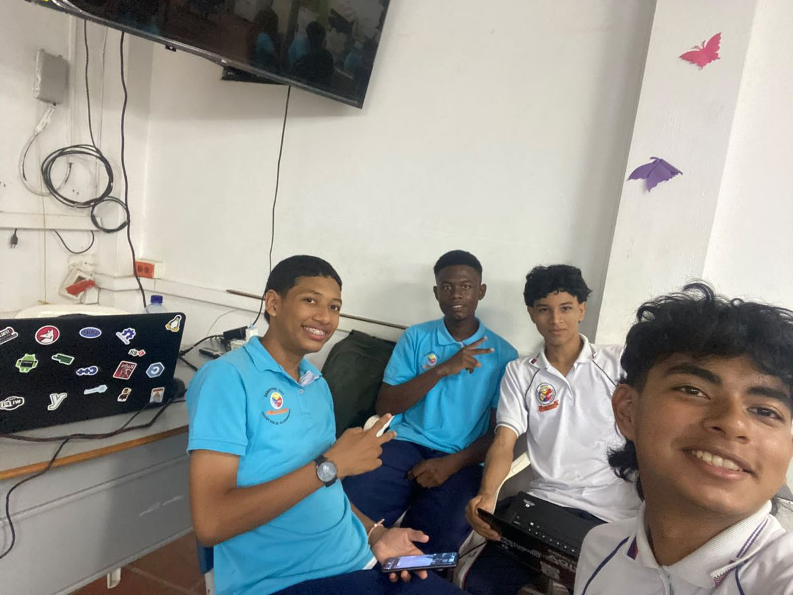

Sección 02
Integrantes
Las cuatro personas que desarrollan y documentan el Medidor de temperatura en Aulas de Clases en el curso 11.B de Media Técnica de Sistemas.

01
Equipo de trabajo
Curso 11.B de Media Técnica de Sistemas, Institución Educativa Colombia.
-
Jhon Fredy Montalvo Cuadrado
Curso 11.B -
José David Mosquera Rodríguez
Curso 11.B -
Esteban Espinoza Gomez
Curso 11.B -
Brandol Stevan Durango Moreno
Curso 11.B
La fotografía de portada muestra al equipo reunido durante una sesión de trabajo. El proyecto no dispone de retratos individuales ni de biografías, por lo que la lista se limita a los nombres verificados de los cuatro integrantes.
02
Datos del equipo
- Institución
- Institución Educativa Colombia
- Curso
- 11.B · Media Técnica de Sistemas
- Nombre del proyecto
- Medidor de temperatura en Aulas de Clases
- Integrantes
- Cuatro estudiantes
- Producto entregado
- Sitio web de documentación del proyecto
- Contacto
- 3104618120
El equipo trabaja de forma conjunta en el prototipo: cada integrante participa en el montaje, en las pruebas de lectura y en la documentación de lo que se hace. Este sitio es el resultado de ese trabajo compartido.